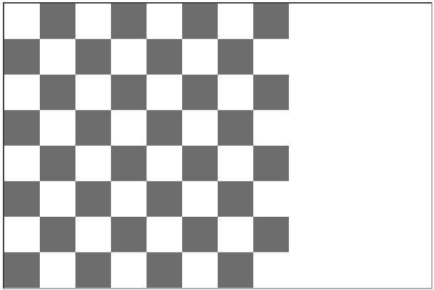
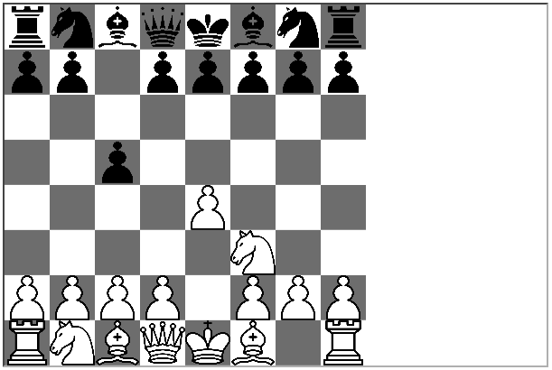
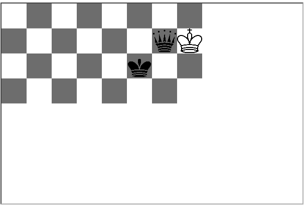

Declarative Programming - Lab 1
Extra credit exercise
- Create a picture emptyBoard describing the empty board.
Prelude> render emptyBoard

-
Given the description of a chess position in the FEN notation, define a picture representing it. Use the emptyBoard picture created above. For example, the e4c5Nf3 picture is described by the "rnbqkbnr/pp1ppppp/8/2p5/4P3/5N2/PPPP1PPP/RNBQKB1R" FEN string and it is rendered to:
Prelude> render e4c5Nf3

Note. To solve the exercise above, you can consider using the clear picture, which is as large as a square/piece, but it is transparent, so it can be used to put space between pieces. For example,
mate = over (above clear (above (beside (repeatH 6 clear) (beside (invert queen) king)) (beside (repeatH 5 clear) (invert king)))) middleBoard
Prelude> render mate
Creates the following picture:

In the coming laboratories we will learn how to write a function which turns any such FEN description into a picture.